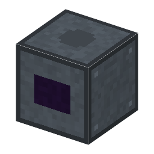

説明
①子ども 落ちてくるスズの粒をレーザーで撃ち抜いて、とても熱いプラズマにして、目に見えない極端紫外線（13.5nm）を出す装置。
②学生 鋼×6＋電磁石＋ターボ分子ポンプ＋銅ケーブル。2kW。スズ・液滴発生器・集光鏡（多層膜ミラー）・水素の袋を入れ、隣に真空容器（10Pa 以下）と CO2 レーザー（何台でも）を置く。EUV の出力＝レーザーの赤外線の合計×5%×集光鏡の反射率。1回でスズ1。水素がないと集光鏡にスズが積もって暗くなる。
③大人 2000年代、アメリカのサイマー社などが、スズの滴を CO2 レーザーで撃つ光源（LPP）を作り、2010年代に実用になった。2019年から EUV で最先端のチップの量産が始まった。
④ガチ 直径約30µm の滴を1秒に約5万個落とし、弱いパルスで平たくしてから主パルスで数十万℃のプラズマにする（電子が飛び回るスズのイオンが 13.5nm を出す）。変換効率は約5%なので、約250W の EUV に 20〜40kW の CO2 レーザーが要る。スズのくずは水素で SnH4 の気体にして流す。
作り方
使い道
（このアイテムを使うレシピは無い）